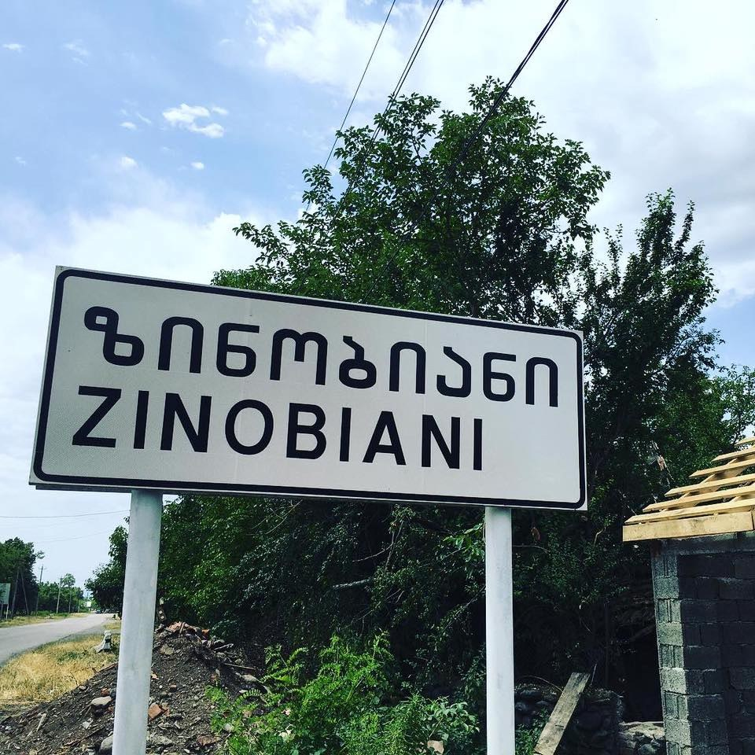
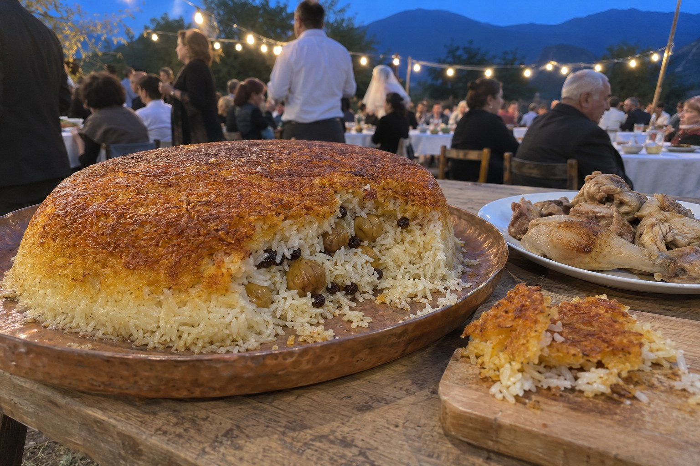

Донышко

Надрезайте крестиком, на круглом боку. Не на плоском — на плоском он лопнет не туда, и потом его не почистишь, только ругаться. Вот так. Теперь в воду, пусть покипят, пока я рис мою. Горячие чистить надо, холодные не отдают кожицу. Обожжётесь — ничего, это все обжигаются, у меня к ноябрю все пальцы в пятнах.
Каштаны с горы, из леса над Кварели. Внук вчера ходил с мешком. Можно купить на рынке, но на свадьбу покупными нельзя, это я так считаю, не закон. Мой дед, когда пришёл сюда искать место, сначала увидел каштаны, а потом уже землю. Он говорил: если каштан растёт — значит, можно жить. У нас там, в Варташене, каштаны были на каждой улице.
Варташен — это за горами, в Азербайджане. Сейчас он называется Огуз. Наши оттуда ушли в двадцать втором году, когда там было плохо всем и сразу: армяне с азербайджанцами воевали, а удин никто не спрашивал, с кем он. Удины — это мы. Вы, наверное, слышите в первый раз. Ничего, в Кварели половина тоже не знает, а живёт в десяти километрах.
Повёл их Зиноби. Силикашвили, а по старым бумагам — Силиков. Он был грамотный, из богатой семьи, ездил в Тифлис, говорил с начальством. Первая группа пришла в двадцать втором, выбрала место — вот это, где мы с вами стоим, только тогда здесь был кустарник и камни. Дед был в первой группе, ему было лет двадцать. Бабушка пришла в двадцать четвёртом, ещё с двадцатью двумя семьями. Она мне говорила, что дед встретил их на дороге и первым делом показал не дом, а каштаны. Дома ещё не было. Был шалаш и каштаны.
Через год село назвали Зинобиани. По Зиноби. Он тут сделал всё: школу, почту, кооператив, у серной воды баню. Старики про баню вспоминали больше, чем про школу, — им, наверное, в школу уже было поздно, а в баню никогда не поздно.
А в тридцать восьмом году за ним приехали. Увезли, и больше не привезли. Через месяц пришла бумага, что село теперь называется Октомбери. Октябрь, по-грузински. Табличку на въезде дед снял сам. Ему сказали прийти и снять, и он пришёл, снял старую и повесил новую. Бабушка спросила: зачем ты? Он сказал: лучше я, чем они.
Фотографию Зиноби бабушка держала в Библии, между страниц, где Иосифа продают братья. Я спросила, почему там. Она сказала: там никто искать не будет, туда только мы смотрим. Библия лежит у меня, и фотография лежит там же. Я её не перекладываю.
Так мы и жили. Семьдесят два года. В школе я писала «Октомбери» в каждой тетрадке, сверху, где число. А дома говорили «Зинобиани». Не громко. Как говорят про покойника, которого любили: дверь закрыта, а имя в доме есть. Два адреса, а дом один.
Рис готов? Сливайте. Не до конца он должен свариться, а наполовину, чтобы зерно в середине было твёрдое, как вы. Это шутка. Вы не твёрдый, вы вежливый. У нас тут вежливых не было никогда, все свои.
Теперь самое главное. Мацони — вот, полная банка, — яйца, три штуки, бей в миску. Мешаем. Сюда же часть риса, вот столько. Это будет донышко. Его кладут первым, на дно казана, толщиной в два-три пальца, кто как любит. Потом сверху рис, каштаны, изюм. И опять рис, каштаны, изюм. И закрываем, и на огонь, на самый маленький, под казан железный лист, чтобы не жгло в одном месте. И два часа никто не трогает. Это называется чайнахуп. «Чайн» — масло топлёное, «хуп» — плов. Вот и весь секрет, только масла не жалеть.
А донышко — это то, на чём всё держится. Оно внизу, его не видно, гости его не получают. Гостям — рис с каштанами, курица сверху. А донышко ломают на куски и раздают своим. Так у нас в семье делали, может, у соседей по-другому, я к соседям в казан не заглядываю.
Казан этот, кстати, тоже из Варташена, только не с дедом пришёл, а с мамой. Мама моя была невеста оттуда. До пятидесятых годов у нас женились только на своих: свою девочку сватать за грузина — нет, грузинскую брать — тоже нет, но так, чтобы не обидеть. Невест возили из Варташена и из Ниджа. Это второе наше село, тоже там, в Азербайджане. Маму привезли в пятьдесят втором, ей было восемнадцать, она плакала всю дорогу, а казан ехал у неё на коленях. Она говорила, что плакала не из-за жениха, а из-за казана — он был горячий от солнца, и она обожгла колени через юбку. Это она так говорила. Я думаю, из-за жениха тоже.
Мама была последняя такая. После неё уже не возили. После пятидесятых наших детей стали возить в школу в соседнее село, там девятый и десятый класс, а у нас была только восьмилетка. Сидели за одной партой с грузинами, ходили в одно кино. И вот, пожалуйста. Мой брат женился на грузинке, моя дочь вышла за грузина, сегодня внучка выходит за грузина. Когда дочь выходила, в девяносто шестом, ещё шептались. Сегодня никто не шепчется. Некому шептаться: все уже родня.
Моя тётя, мамина младшая, наоборот, в восемьдесят восьмом вышла замуж туда, в Нидж. Потом стало трудно ездить, и мы виделись раз в десять лет, на похоронах.
Вино на свадьбу — наше, из квеври, вон там, под навесом, закопано. Удины делают вино по-грузински, по-другому здесь и нельзя. Первый квеври деду помог закопать сосед из Кварели, грузин, а дед ему за это показал, как варить чайнахуп. Сосед потом всю жизнь говорил, что обмен нечестный: квеври закопали один раз, а плов он теперь ест на каждой нашей свадьбе. Его внук сегодня тоже придёт. Он уже не помнит, за что ест, но приходит.
Масло давайте. Вот туда, по краю, чтобы стекало вниз, к донышку. Не жалейте, я сказала.
Слышите, музыка — это у жениха. Они там с утра. Жених хороший мальчик, из Кварели, агроном. Его мама вчера пришла ко мне посмотреть, что мы будем готовить. Посмотрела на казан, на каштаны, на изюм и говорит: «Это же плов». Я говорю: «Да, плов». Она говорит: «А я думала, у вас что-то своё». Я говорю: «Это и есть своё». Она подумала и спросила, можно ли ей тоже будет кусок донышка. Я сказала: после свадьбы — можно, будете своя.
Мы ведь сами долго не рассказывали, кто мы. Спросят — удины, а что это — пожимали плечами. Меня в школе дразнили — не грузины, не армяне, не азербайджанцы, а кто? Я один раз пришла домой и спросила бабушку: «Бабо, а мы вообще кто?» Она сказала: «Мы — те, кто здесь давно, только не здесь». Я ничего не поняла. Мне было лет девять. Я поняла, когда мне было лет пятьдесят.
Вы тоже приехали. Я вижу. Вы говорите по-русски не так, как говорили наши учителя, вы говорите, как говорят те, кто уехал и теперь всё время немножко оглядывается. Не обижайтесь. Пройдёт лет сто, ваших правнуков тоже будут спрашивать: а вы, собственно, кто? Пусть отвечают, как моя бабушка. Это хороший ответ, я его проверила.
Две тысячи десятый год. Пришла бумага, что можно опять Зинобиани. Мы попросили, и нам разрешили. Таблички на въезде поменяли за один день. Мама была ещё жива. Она вышла на дорогу, постояла и сказала одно: «Ну вот, а дед снимал». И пошла домой резать лук. Плакать она не стала, у неё лук был для этого.
А в двадцать втором году нам исполнилось сто лет. Сто лет, как мы здесь. Приехали гости, профессора, телевидение, поставили Зиноби бюст. Внизу надпись по-грузински и ещё буквами, которых никто из нас не читает. Это наши старые буквы, албанские. Их больше тысячи лет никто не писал, а потом нашли и прочитали учёные. Я подошла и потрогала. Буквы как крючки, как каштановые колючки. Внучка младшая спросила: «Бабо, что там написано?» Я сказала: «Там написано, что мы здесь». Она сказала: «Нет, там написано Зиноби Силикашвили, я по-грузински вижу». Я сказала: «Это одно и то же».
Младшая, Нино, ей девять, учит в школе удинский. Это недавно стали учить, лет десять назад. Пишут его грузинскими буквами, своих-то нет. Она приходит, говорит слово, а я говорю: «Не так, у тебя „к“ мягкое, надо горлом». А как это написать, я не знаю. Я говорю, но не пишу. Она пишет, но не говорит. Вместе у нас получается один удин.
Невеста забегала утром, в халате, с бигуди, — попробовать изюм. Я её выгнала. Она сказала: «Бабо, я только посмотреть, как ты донышко кладёшь». Я сказала: «Смотреть будешь, когда своё положишь». Она сказала: «А Леван не удин, ему, может, и не надо донышко». Я сказала: «Ему, может, и не надо. Тебе надо». Она засмеялась и убежала краситься. Двадцать семь лет, а бегает, как Нино.
Теперь ждём. Вы садитесь, вот табуретка, огонь не трогайте. Если хотите пользы — чистите ещё каштаны на завтра, завтра будет второй день, и опять придут.
Знаете, когда переворачиваешь казан, донышко должно выйти целиком, одной лепёшкой, румяное. Если оно порвалось, прилипло, — говорят, плохая примета. Я в приметы не верю. Но я всю жизнь переворачиваю, и у меня ни разу не порвалось. На свадьбе дочери чуть-чуть надорвалось с краю, и они с мужем в двухтысячном году расходились на полгода. Потом сошлись. Я ничего не говорю. Я просто смотрю каждый раз.
Ну вот. Два часа. Давайте сюда блюдо, большое, вон то. Держите крепко, двумя руками. На счёт три. Раз, два…
Целое. Видите? Ни трещинки. Это внучке на счастье, а мне на спокойствие.
Курицу сверху. Масло ещё, горячего. Теперь гостям несём рис, а донышко — сюда, на доску. Первый кусок невесте. Второй — её свекрови, я обещала, она уже своя. Третий — Нино, чтобы помнила вкус, когда будет писать про нас своими буквами. Четвёртый — мне, я заслужила.
А пятый вам. Берите, берите. Вы руки обожгли — значит, свой.

Чайнахуп — удинский плов с каштанами на топлёном масле
На восемь — десять человек
Что нужно
- рис длиннозёрный — 1 кг;
- каштаны съедобные — 500 г;
- изюм тёмный без косточек — 300 г;
- мацони — 400 г;
- яйца — 3 шт.;
- топлёное масло — 300 г;
- курица (некрупная, молодая) — 1 шт., около 1,3 кг;
- соль — по вкусу (на воду для риса — 2 ст. л. на 4 л).
Как делать
1. Каштаны надрежьте крестом на выпуклой стороне и варите 15 минут. Чистите горячими — снимите и скорлупу, и внутреннюю плёнку.
2. Изюм промойте и залейте тёплой водой на 15 минут, затем откиньте.
3. Курицу целиком залейте холодной водой, доведите до кипения, снимите пену, посолите и варите на слабом огне 50–60 минут, до готовности.
4. Рис промойте до прозрачной воды. Всыпьте в кипящую подсолённую воду (4 л) и варите 6–7 минут, до полуготовности: зерно снаружи мягкое, внутри ещё твёрдое. Откиньте на сито.
5. Донышко: взбейте мацони с яйцами и щепоткой соли, вмешайте примерно четверть полуготового риса.
6. В толстостенный казан или кастрюлю (лучше чугунную, 6–8 л) налейте 2 ст. л. растопленного масла и разровняйте по дну массу для донышка слоем 3–4 см.
7. Сверху выложите слоями: рис, каштаны, изюм, снова рис, каштаны, изюм; последний слой — рис. Не утрамбовывайте.
8. Растопите 150 г масла и полейте по краю казана, чтобы стекало вниз. Ручкой ложки сделайте в рисе 4–5 отверстий до дна. Накройте полотенцем, сверху плотной крышкой.
9. Поставьте на самый слабый огонь, подложив рассекатель (или толстый железный лист, если готовите на костре). Готовьте 1,5–2 часа, не открывая первые полтора часа.
10. Курицу разберите на крупные куски и обжарьте на 2 ст. л. топлёного масла до румяности.
11. Снимите казан с огня, накройте большим блюдом и переверните одним движением. Донышко должно выйти целиком, золотисто-коричневым.
12. Курицу выложите сверху, полейте оставшимся горячим маслом. Донышко снимите отдельно и разломайте на куски.
Донышко делят на своих, а свои — это все, кто держал казан.
Тбилиси, ноябрь 2026